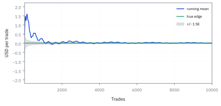
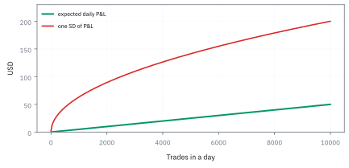
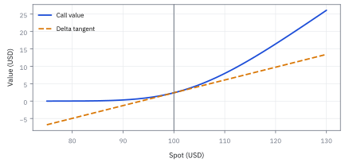

14.1 The Law of Large Numbers
นับการทดลองที่เป็นอิสระจริง ก่อนเชื่อว่าค่าเฉลี่ยจะนิ่ง
เครื่องหนึ่งทำงานซ้ำหลายครั้งและได้ผลบวกเล็กมากต่อครั้ง แต่แต่ละครั้งแกว่งแรงกว่าเฉลี่ยมาก; ทำซ้ำมากพอแล้วค่าเฉลี่ยจะนิ่งหรือไม่?
เฉลย: ใช่—ค่าเฉลี่ยจะนิ่งขึ้นเมื่อรอบทดลองเป็นอิสระกันและ expected value มีค่าจำกัด; Law of Large Numbers คือกฎที่บอกเงื่อนไขนี้. เสียงโห่ของแต่ละรอบอาจดังมาก แต่เมื่อรวมทั้งสนาม สัญญาณจึงเริ่มได้ยิน.
ศัพท์ที่ใช้ในหัวข้อนี้
- Law of Large Numbers (LLN)
- กฎที่บอกว่าค่าเฉลี่ยจากการทดลองจำนวนมากจะเข้าใกล้ expected value ภายใต้เงื่อนไขที่เหมาะสม ใช้ประเมินว่าการทำซ้ำช่วยลดความไม่แน่นอนได้แค่ไหน
- independent and identically distributed (iid)
- ผลแต่ละครั้งไม่เปิดข้อมูลลับของครั้งถัดไป และมาจาก distribution rule เดียวกัน จึงทำให้การเพิ่มจำนวนครั้งเพิ่มข้อมูลใหม่จริง
- expected value
-
คืออะไร: ค่ากลางที่ถ่วงด้วยความน่าจะเป็น คือจุดศูนย์ถ่วงของผลลัพธ์ทั้งหมด
ใช้ทำอะไร: เป็นค่าที่กฎในหัวข้อนี้บอกว่าค่าเฉลี่ยจากข้อมูลจะเข้าใกล้
ทำไมต้องแยกจากค่าเฉลี่ยของข้อมูล: เพราะตัวนี้เป็นตัวเลขตายตัวที่เรามองไม่เห็น ส่วนค่าเฉลี่ยจากข้อมูลเปลี่ยนไปทุกครั้งที่เก็บใหม่ ทั้งหัวข้อนี้พูดถึงระยะห่างของสองสิ่งนี้
- standard deviation
-
คืออะไร: ขนาดการกระจายรอบค่ากลาง ในหน่วยเดียวกับตัวข้อมูลเอง
ใช้ทำอะไร: ใช้บอกว่าต้องเก็บข้อมูลเท่าไรถึงจะเข้าใกล้พอ
ทำไมถึงกำหนดความเร็ว: เพราะข้อมูลที่กระจายกว้างต้องใช้จำนวนมากกว่า จึงจะได้ความแม่นเท่ากัน กฎนี้ไม่ได้บอกแค่ว่าลู่เข้า แต่บอกด้วยว่าช้าแค่ไหน
- effective sample size
- จำนวนข้อมูลอิสระที่เทียบเท่าหลังหักความสัมพันธ์ระหว่างรายการ ใช้ไม่ให้นับ trade ที่ตอบสนองข่าวเดียวกันซ้ำ
- Sharpe ratio (SR)
- ผลตอบแทนส่วนเกินเฉลี่ยต่อหน่วยความผันผวนใน horizon เดียวกัน ใช้เทียบคุณภาพ signal แต่ไม่ใช่ใบอนุญาตเพิ่ม leverage
สัญลักษณ์ที่ใช้ในหัวข้อนี้
| สัญลักษณ์ | ความหมาย | หน่วย |
|---|---|---|
| $X_i,\;i=1,\ldots,n$ | กำไรขาดทุนสุทธิของการจับคู่ลำดับที่ $i$ หลังค่าธรรมเนียมและต้นทุนปิดสถานะ | USD ต่อ trade |
| $\mu,\sigma^2,\sigma$ | ค่าเฉลี่ยระยะยาว ขนาดการเหวี่ยงในหน่วยกำลังสอง และขนาดการเหวี่ยงในหน่วยเดิม ของกำไรขาดทุนต่อหนึ่งไม้ $X_i$ | USD/trade; USD²/trade²; USD/trade |
| $\bar X_n,S_n$ | ค่าเฉลี่ยตัวอย่างและผลรวมของกำไรขาดทุนจาก $n$ trades | USD/trade; USD |
| $n$ | จำนวนไม้เทรดทั้งหมดที่นำมาเฉลี่ย | count |
| $D$ | จำนวนวันทำการที่เก็บข้อมูล | days |
| $Y$ | ความยาวของช่วงข้อมูลเป็นปี | years |
| $\rho$ | ความสัมพันธ์ร่วมระหว่างไม้ ค่านี้ยิ่งสูง จำนวนไม้ที่นับได้ยิ่งไม่ใช่จำนวนไม้ที่นับได้จริง | ไม่มีหน่วย |
| $n_{\rm eff},\mathrm{SR}$ | จำนวนตัวอย่างอิสระเทียบเท่า และ Sharpe ratio ของ horizon ที่ระบุ | count; ไม่มีหน่วย |
ที่มาที่ไป: ทฤษฎีบทแรกของวิชาความน่าจะเป็น
Jacob Bernoulli ใช้เวลายี่สิบปีพิสูจน์สิ่งที่ทุกคนเชื่ออยู่แล้ว คือถ้าโยนเหรียญมากพอ สัดส่วนหัวจะเข้าใกล้ครึ่งหนึ่ง
เหตุผลที่เขาทุ่มเวลาให้กับสิ่งที่ดูชัดเจนคือ ความเชื่อกับการพิสูจน์เป็นคนละเรื่อง และเขาต้องการรู้ว่ามันเข้าใกล้ *เร็วแค่ไหน* ซึ่งเป็นคำถามที่ยากกว่ามาก
คำถามข้อหลังนั่นเองที่โต๊ะเทรดต้องการคำตอบ เพราะไม่มีใครเทรดได้ไม่จำกัด การรู้ว่าค่าเฉลี่ยจะนิ่งในที่สุดไม่มีประโยชน์ ถ้าไม่รู้ว่าต้องใช้เวลากี่ปี
และคำตอบมักทำให้คนผิดหวัง เพราะจำนวนข้อมูลที่ต้องใช้เพื่อความมั่นใจระดับที่ยอมรับได้ มักยาวกว่าอายุของกลยุทธ์ส่วนใหญ่
ทำไมกฎนี้ต้องพิสูจน์ — เรื่องที่ Bernoulli ใช้เวลายี่สิบปี
ก่อน Jacob Bernoulli ไม่มีใครรู้ว่า 'เฉลี่ยแล้วนิ่ง' เป็นทฤษฎีบทที่ต้องพิสูจน์ ทุกคนเชื่อตามสามัญสำนึก แต่ไม่มีใครบอกเงื่อนไขที่ทำให้จริง
Bernoulli เริ่มงานราว ๆ ค.ศ. 1689 และเขียนเสร็จใน *Ars Conjectandi* ซึ่งตีพิมพ์หลังเสียชีวิตในปี 1713 ข้อความที่เขาพิสูจน์คือ: ถ้าโยนเหรียญซ้ำ ๆ สัดส่วนหัวจะเข้าใกล้โอกาสจริงได้ใกล้เท่าไรก็ได้ ขอแค่โยนมากพอ นี่คือ weak law of large numbers ฉบับแรก
ราว ๆ ร้อยห้าสิบปีต่อมา Chebyshev (ค.ศ. 1867) ให้เครื่องมือที่ทำให้พิสูจน์สั้นลงเหลือไม่กี่บรรทัด เครื่องมือนั้นคือ Chebyshev's inequality ซึ่งขั้นที่ 5 จะสร้างให้ดู
สิ่งที่ทั้งสองคนทำเหมือนกันคือ เปลี่ยนสามัญสำนึกให้เป็นเงื่อนไข: ค่าเฉลี่ยนิ่งได้ก็ต่อเมื่อ expected value มีค่าจำกัด และข้อมูลแต่ละชิ้นไม่ส่งข่าวถึงกัน (independence) ถ้าเงื่อนไขข้อใดข้อหนึ่งขาด ค่าเฉลี่ยอาจไม่นิ่งเลย Cauchy distribution เป็นตัวอย่างคลาสสิก
Worked Example — โจทย์และสิ่งที่ให้มา
โจทย์ให้อะไรมาบ้าง: ให้ desk สมมติซื้อขายหุ้นสหรัฐฯ รอบละ 10,000 รายการต่อวัน โดยหลัง adverse selection, fees และผลของ inventory แล้วกำไรเฉลี่ยสุทธิคือ 0.005 USD ต่อ trade และความผันผวนคือ 2 USD ต่อ trade. spread บอกเพดานรายได้ขั้นต้น แต่กำไรขาดทุนของแต่ละรายการต้องเป็นผลที่เกิดขึ้นจริงหลังปิดความเสี่ยงใน horizon เดียวกัน จึงจะเป็นข้อมูลสำหรับตัดสินใจได้
โจทย์นี้ตั้งใจมองโลกในแบบสะอาด: distribution คงที่, trades เป็น iid และมี expected absolute P&L จำกัด. ตลาดจริงชอบแหกข้อสมมติทั้งสามข้ออย่างมีบุคลิก แต่เริ่มจากแบบสะอาดก่อนเพื่อเห็นว่ากฎบอกอะไร และที่สำคัญไม่บอกอะไร
ขั้นที่ 1 — นิยามของสองปริมาณที่จะพูดถึงตลอดหัวข้อ
สองก้อนนี้เป็น นิยาม ไม่ได้พิสูจน์มาจากอะไร แต่ต้องเขียนให้ชัดก่อน เพราะกฎในหัวข้อนี้พูดถึงตัวแรกเท่านั้น ไม่ได้พูดถึงตัวที่สอง ตัวแรกมีหน่วยเป็นเงินต่อหนึ่งไม้ ส่วนตัวที่สองมีหน่วยเป็นเงิน การสลับสองหน่วยนี้คือความผิดพลาดที่ทำให้คนสรุปว่าเทรดเยอะแล้วความเสี่ยงหายไปเอง
$\bar X_n$ วัดกำไรเฉลี่ยต่อ trade และ $S_n$ วัดเงินรวม; อย่าสลับสองหน่วยนี้ เพราะค่าเฉลี่ยมีหน่วย USD/trade แต่ผลรวมมีหน่วย USD
ขั้นที่ 2 — ข้อความของกฎและอัตราที่ desk ต้องใช้
กฎบอกว่ามันลู่เข้า แต่ไม่ได้บอกว่าเร็วแค่ไหน ซึ่งอัตราต่างหากที่โต๊ะต้องใช้วางแผน หกบรรทัดนี้คำนวณอัตรานั้นออกมา และคำตอบคือรากที่สอง ไม่ใช่เชิงเส้น ข้อมูลสี่เท่าจึงลดความไม่แน่นอนแค่ครึ่งเดียว
ถามคำถามเดียว ถ้าเอาข้อมูลหลายชิ้นมาเฉลี่ยกัน ค่าเฉลี่ยนั้นเหวี่ยงแค่ไหน ใส่ variance ลงบนนิยามของค่าเฉลี่ยในขั้นที่ 1 แล้วดึงตัวหารออกมา ซึ่งออกมาเป็นกำลังสองตามกฎของหัวข้อ 6.5
ข้อสมมติเดียวอยู่บรรทัดสาม แต่ละไม้ไม่ส่งข่าวถึงกัน พจน์ไขว้จึงเป็นศูนย์ เหลือแค่การบวก variance ที่เท่ากัน $n$ ก้อน ตัดทอนแล้วเหลือ $n$ อยู่ใต้เศษ ถอดรากได้ขนาดความไม่แน่นอนของค่าเฉลี่ย
นี่คือกลไกทั้งหมดของ law of large numbers ตัวเศษไม่โต แต่ตัวส่วนโต ความกว้างจึงหดเข้าหาศูนย์ และค่าเฉลี่ยก็ต้องเกาะค่าจริงมากขึ้นเรื่อย ๆ ขั้นที่ 5 จะทำให้ข้อความนี้ตรวจได้ด้วยตัวเลข
ทำไมต้อง $1/n$ ไม่ใช่ $1/n^2$ — ตอบคำถามที่ทุกคนถาม
คำถามที่คนส่วนใหญ่ถามเงียบ ๆ คือ ทำไมความแกว่งของค่าเฉลี่ยหดลงตามจำนวนตัวอย่าง ไม่ใช่หดลงตามจำนวนตัวอย่างยกกำลังสอง ทั้งที่ตัวหารข้างในถูกยกกำลังสองไปแล้ว
คำตอบอยู่ที่ว่ามีเลขสองตัวกำลังสู้กัน ตัวหารยกกำลังสองดันให้เล็กลงเร็ว แต่ความแกว่งของผลรวมโตขึ้นตามจำนวนก้อนที่เอามาบวกกัน สองแรงนี้หักกันไปหนึ่งชั้นพอดี เหลือการหดแบบธรรมดาตามจำนวนตัวอย่าง ตามที่กางไว้ในบล็อกถัดไป
จุดที่ independence เข้ามาทำงานคือตอนแยกความแกว่งของผลรวมออกเป็นก้อน ๆ ถ้าข้อมูลซ้ำกันหมด ความแกว่งของผลรวมจะโตเป็นกำลังสอง แล้วค่าเฉลี่ยจะไม่หดลงเลย การเก็บข้อมูลเพิ่มจึงไม่ได้ช่วยอะไร ถ้าสิ่งที่เก็บมาเป็นข่าวเดิม
ที่พลาดกันบ่อยคือเผลอคิดว่าการเฉลี่ยลดทั้ง bias และความแกว่ง ความจริงคือ bias ไม่ลดเลยแม้แต่น้อย ค่าเฉลี่ยของค่าเฉลี่ยยังเท่าเดิม สิ่งที่ลดคือความแกว่งเท่านั้น
ขั้นที่ 2ก — กางให้เห็นว่า $n$ ตัวไหนตัดกับ $n$ ตัวไหน
นี่คือเหตุผลที่กฎรากที่สองโผล่มาทุกที่ในงานจริง อยากได้ความแม่นยำสองเท่า ต้องเก็บข้อมูลสี่เท่า อยากได้สิบเท่า ต้องเก็บร้อยเท่า เวลาที่ backtest บอกว่าต้องรอสามปีถึงจะรู้ว่ากลยุทธ์ดีจริง ตัวเลขนั้นมาจากบรรทัดสุดท้ายนี้
ตัวคูณข้างหน้าถูกยกกำลังสองตอนดึงออกมานอกวงเล็บ นั่นคือกฎที่ว่าคูณข้างในด้วยอะไร ความแกว่งจะโตขึ้นเท่าของสิ่งนั้นยกกำลังสอง จึงได้ตัวส่วนเป็นกำลังสอง
บรรทัดที่สามคือจังหวะชี้ขาด ความแกว่งของผลรวมแยกออกเป็นก้อน ๆ ได้ เพราะข้อมูลเป็นอิสระต่อกัน ถ้าไม่อิสระ บรรทัดนี้เขียนไม่ได้ และทุกอย่างหลังจากนี้พัง
พอแยกได้ ก็มี $n$ ก้อน ก้อนละเท่ากัน คูณกันได้ $n\sigma^{2}$ ตัว $n$ ตัวนี้เองที่ขึ้นไปหักกับกำลังสองข้างล่าง เหลือ $n$ เดียวเป็นตัวส่วน
อ่านผลลัพธ์เป็นภาษาคน เก็บข้อมูลเพิ่มสี่เท่า ความแกว่งลดสี่เท่า แต่ความกว้างของช่วงที่เรากลัวคือรากที่สองของมัน จึงแคบลงแค่สองเท่า ความแม่นยำจึงแพงขึ้นเรื่อย ๆ
ขั้นที่ 3 — ลองด้วยมือ: รากที่สองทำงานช้าแค่ไหน
ก่อนไปต่อ เอาสูตร standard error มาลองกับตัวเลขของโจทย์ แล้วนับว่าต้องใช้กี่ไม้ กี่วัน
ทุกครั้งที่ต้องการให้เสียงเบาลงครึ่งหนึ่ง ต้องเก็บข้อมูลเพิ่มสี่เท่า (จาก 4 เป็น 16 เป็น 64) เพราะรากที่สองของสี่คือสอง
เอดจ์ 0.005 ต่อไม้ ซ่อนอยู่ใต้เสียง 2 ต่อไม้ ที่ 10,000 ไม้ต่อวัน เสียงของค่าเฉลี่ยยังใหญ่กว่าเอดจ์สี่เท่า (0.02 เทียบกับ 0.005) วันเดียวจึงตัดสินอะไรไม่ได้
จะให้เสียงเท่าเอดจ์ต้องใช้ 160,000 ไม้ คือ 16 วัน จะให้เสียงเหลือครึ่งของเอดจ์ (ค่าเฉลี่ยห่างจากศูนย์สอง standard error) ต้องใช้ 640,000 ไม้ คือ 64 วัน นี่คือคำถาม ‘เร็วแค่ไหน’ ของ Bernoulli ในหน่วยวันทำการ
แล้วเอาไปใช้ทำอะไรได้จริงบ้าง
การรู้ว่าค่าเฉลี่ยนิ่งลงเมื่อไร เป็นฐานของการตัดสินว่าผลงานเชื่อได้หรือยัง
ใช้ตอบว่าต้องเก็บข้อมูลกี่ไม้หรือกี่ปี ถึงจะสรุปได้ว่ากลยุทธ์มี edge จริง
ใช้เป็นเหตุผลว่าทำไมการจำลองต้องรันหลายรอบ และรันเท่าไรถึงพอ
ใช้เตือนว่าค่าเฉลี่ยระยะสั้นแทบไม่บอกอะไร ซึ่งเป็นสิ่งที่นักลงทุนมักลืม
ภาพ 14.1a — ค่าเฉลี่ยวิ่งเข้าหาเอดจ์ แต่กรวยไม่ปิดทันที

เส้นสีน้ำเงินเป็นเส้นทางกำไรขาดทุนสังเคราะห์แบบกำหนดตายตัวที่มีค่าเฉลี่ย $\$0.005$ ต่อ trade; แถบเทาเป็นขนาด $\pm\sigma/\sqrt n$. ช่วงแรกค่าเฉลี่ยแกว่งจนแทบมองไม่เห็นเอดจ์ จึงห้ามใช้ equity curve สั้นเป็นคำพิพากษา.
ขั้นที่ 4 — รวมหนึ่งวัน: สัญญาณโตตาม $n$ แต่เสียงโตตาม $\sqrt n$
แทนตัวเลขหนึ่งวันจริง จะเห็นว่าสิ่งที่เราอยากได้โตเร็วกว่าสิ่งที่รบกวน หกบรรทัดนี้อธิบายว่าทำไมธุรกิจที่เทรดถี่ถึงอยู่ได้ด้วยกำไรต่อไม้ที่เล็กมาก และทำไมมันถึงต้องเทรดถี่ขนาดนั้นจริง ๆ ไม่ใช่แค่อยากเทรด
กุญแจของทั้งหัวข้ออยู่ที่สองอย่างนี้โตไม่เท่ากัน กำไรที่คาดหวังบวกกันตรง ๆ ตามกฎของหัวข้อ 1.3 จึงโตตามจำนวนไม้ ส่วนความกว้างบวกแบบ variance จึงโตแค่ตามราก
หารสองอย่างกัน รากตัดกับจำนวนไม้ เหลือรากเดียว นั่นคือเหตุผลเชิงตัวเลขว่าทำไมการทำซ้ำถึงช่วย และช่วยเท่าไร
ลองด้วยเลขของโจทย์ หมื่นไม้ต่อวัน กำไรเฉลี่ยครึ่งเซ็นต์ต่อไม้ ความเหวี่ยงสองดอลลาร์ ได้กำไรคาดหวัง 50 ดอลลาร์ต่อวัน ส่วนความกว้าง 200 ดอลลาร์
สิ่งที่เราอยากได้โตเร็วกว่าสิ่งที่รบกวน แต่ช้ากว่าที่คนส่วนใหญ่คิดมาก เพราะอัตราส่วนโตแค่ตามราก ทำไม้เพิ่มสี่เท่าได้คุณภาพเพิ่มสองเท่าเท่านั้น
ภาพ 14.1b — สัญญาณและเสียงโตคนละความเร็ว

เส้นคาดหวังของกำไรรวมเติบโตตาม $n\mu$ ขณะที่แถบหนึ่ง standard deviation โตตาม $\sigma\sqrt n$. การวาดทั้งสองหน่วยเป็น USD ต่อวันทำให้เห็นว่าคุณภาพของวันหนึ่งดีขึ้นเพราะอัตราส่วน ไม่ใช่เพราะความผันผวนหายไป.
คำตอบ ตรวจเอง และแปลว่าอะไร
คำตอบและความหมาย: ที่ n=10,000 ได้กำไรรวมคาดหมายตาม model ต่อวัน 50 USD และ standard deviation ของ P&L ต่อวัน 200 USD. ดังนั้น Sharpe รายวันเท่ากับ 0.25 และภายใต้ normal approximation ความน่าจะเป็นที่วันหนึ่งขาดทุนคือ 40.13% — วันแดงไม่ได้ลบล้างเอดจ์
ถ้ามี 250 วันอิสระ expected value ต่อปีคือ 12,500 USD, standard deviation คือ 3,162.28 USD, และ Sharpe ต่อปีเป็น 3.953. ทุกตัวเลขระบุ horizon เป็นวันหรือปี; ห้ามเอา 50 USD ต่อวันไปเทียบกับ volatility ต่อปีโดยไม่แปลงหน่วย.
ตรวจเองใน 10 วินาที: daily Sharpe คือ 50/200=0.25; ข้าม 250 วัน mean เป็น 12,500 USD และ standard deviation เป็น 3,162.28 USD จึงได้ annual Sharpe 3.953. ใช้กำหนด horizon เดียวกันก่อนเทียบผลตอบแทนกับ risk.
ขั้นที่ 4.5 — Markov's inequality: ฐานที่ Chebyshev ยืนอยู่
Markov's inequality (ราว ๆ ค.ศ. 1884 โดย Andrey Markov) เป็นขอบเขตที่ง่ายที่สุดที่เชื่อมค่าเฉลี่ยกับโอกาส ไม่ต้องรู้ distribution ไม่ต้องรู้ variance แค่ไม่ติดลบกับมีค่าเฉลี่ยจำกัดก็พอ Chebyshev ใช้มันโดยแทน $Y=(\bar X_n-\mu)^2$ ซึ่งไม่ติดลบเสมอ
เริ่มจากนิยามของ expected value สำหรับ random variable ที่ไม่ติดลบ integral ทั้งเส้นย่อมมากกว่าหรือเท่ากับ integral ตั้งแต่ $a$ ขึ้นไป เพราะตัดส่วนที่ไม่ติดลบออก
ในช่วง $a$ ถึง infinity ตัว $y$ ไม่น้อยกว่า $a$ จึงดึง $a$ ออกมาหน้า integral ได้ integral ที่เหลือคือโอกาสที่ $Y\ge a$ พอดี
ผลลัพธ์: โอกาสที่ random variable ไม่ติดลบจะใหญ่กว่า $a$ ถูกบีบด้วยค่าเฉลี่ยส่วนด้วย $a$ เอง ดูเรียบง่าย แต่นี่คือกุญแจที่เปิดทาง Chebyshev's inequality ในขั้นถัดไป
ขั้นที่ 5 — วางแผนจำนวนข้อมูลจากความแม่นยำที่ต้องการ
กลับทิศคำถาม แทนที่จะถามว่าข้อมูลเท่านี้บอกอะไรได้ ให้ถามว่าอยากได้ความแม่นระดับนี้ ต้องใช้ข้อมูลเท่าไร หกบรรทัดนี้สร้างขอบเขตขึ้นมาเองจากนิยามของ variance โดยทิ้งของสองครั้ง แต่ละครั้งทิ้งไปทางเดียว ผลจึงเป็นขอบเขตที่ปลอดภัย ไม่ใช่ค่าประมาณ
อยากได้ขอบเขตที่ตรวจได้ด้วยตัวเลข ไม่ใช่แค่คำว่าลู่เข้า เริ่มจากนิยามของ variance คือค่าเฉลี่ยของระยะห่างกำลังสอง แล้วทิ้งส่วนที่ระยะห่างน้อย ๆ ไป ซึ่งทำให้ค่าลดลงเท่านั้น เพราะของที่ทิ้งไม่ติดลบ
ในส่วนที่เหลือ ระยะห่างยกกำลังสองมีค่าอย่างน้อย $\varepsilon^{2}$ อยู่แล้ว จึงแทนด้วยค่านั้นได้โดยค่ายังไม่เพิ่ม แล้วค่าเฉลี่ยของตัวบ่งชี้ก็คือความน่าจะเป็นของเหตุการณ์นั้น
ย้ายข้างแล้วแทน variance ของค่าเฉลี่ยจากขั้นที่ 2 ได้ขอบเขตที่คำนวณได้จริง
บรรทัดสุดท้ายกลับทิศคำถาม กำหนดความแม่นที่ต้องการก่อน แล้วแก้หาจำนวนข้อมูล ขอบเขตนี้ใช้ได้กับทุก distribution จึงหยาบมาก ของจริงมักใช้ข้อมูลน้อยกว่านี้
ทำไมต้อง Chebyshev — ตอบคำถาม 'แค่ variance ลดก็พอแล้ว ทำไมต้องมี inequality'
ความแกว่งที่ลดลงบอกว่าค่าเฉลี่ยขยับน้อยลงโดยเฉลี่ย แต่ยังไม่ได้ตอบคำถามที่อยากรู้จริง ๆ คือโอกาสที่ค่าเฉลี่ยจะหลุดออกไปไกลเกินที่รับได้ ลดลงเท่าไร สองอย่างนี้ไม่ใช่เรื่องเดียวกัน
Chebyshev's inequality คือสะพานที่แปลงเรื่องความแกว่งให้เป็นเรื่องโอกาส วิธีสร้างสะพานคือหยิบ Markov's inequality มาแล้วแทนของเข้าไปให้ถูกตัว ตามบล็อกถัดไป
ขอบเขตที่ได้หลวมมาก สำหรับระฆังคว่ำ โอกาสจริงลดเร็วกว่านี้มหาศาล แต่ข้อดีคือมันไม่ถามเลยว่า distribution หน้าตาอย่างไร ขอแค่ความแกว่งมีค่าจำกัด ของที่ใช้ได้กับทุกอย่างมักจะหลวม และของที่คมมักจะใช้ได้กับกรณีเดียว
ขั้นที่ 5ก — จาก Markov มาเป็น Chebyshev ด้วยการแทนของสองตัว
สังเกตว่าไม่มีตรงไหนเลยที่ต้องรู้ว่าข้อมูลแจกแจงแบบไหน นี่คือเหตุผลที่ผลนี้ยังใช้ได้กับผลตอบแทนที่หางหนา ซึ่งระฆังคว่ำใช้ไม่ได้
Markov ขอแค่อย่างเดียวคือของที่ดูต้องไม่ติดลบ ซึ่งฟรีมาก แลกกับขอบเขตที่หยาบ แต่หยาบแบบใช้ได้เสมอ
กลเม็ดทั้งหมดอยู่ที่บรรทัดสอง เลือกดูระยะห่างยกกำลังสองแทนระยะห่างตรง ๆ เพราะกำลังสองไม่ติดลบแน่นอน จึงผ่านเงื่อนไขเดียวที่ Markov ขอ
พอแทนลงไป ตัวเศษกลายเป็นค่าเฉลี่ยของระยะห่างยกกำลังสอง ซึ่งคือนิยามของความแกว่งพอดี ตรงนี้เองที่ผลของขั้นก่อนหน้าไหลเข้ามาเสียบได้
บรรทัดสุดท้ายคือคำตอบที่อยากได้ โอกาสหลุดกรอบถูกกดลงด้วย $n$ ที่อยู่ตัวส่วน เก็บข้อมูลมากพอ โอกาสพลาดจะเล็กเท่าไรก็ได้ นั่นคือใจความของ law of large numbers
ขั้นที่ 5.5 — สร้างสูตร variance เมื่อข้อมูลสัมพันธ์กัน ทีละบรรทัด
สูตรนี้สร้างจากนิยามของ covariance กับการนับคู่ ไม่มีอะไรซ่อนอยู่ นอกจากสมมติฐานว่าทุกคู่มี correlation เท่ากัน (equicorrelation) ในตลาดจริง correlation ไม่เท่ากันทุกคู่ แต่สูตรนี้ให้ภาพว่า correlation เล็กมากทำอะไรได้
เริ่มจากนิยามของ variance เขียนเป็น covariance กับตัวเอง แล้วกระจายผลรวมสองชั้น ได้ตาราง $n\times n$ ของ covariance ทุกคู่
แยกเป็นสองกอง: เส้นทแยงคือ variance ของตัวเอง มี $n$ ตัว นอกเส้นทแยงคือ covariance ของคู่ที่ต่างกัน มี $n(n-1)$ คู่ ถ้าทุกคู่มี correlation $\rho$ เท่ากัน covariance แต่ละคู่คือ $\rho\sigma^2$
จัดรูปแล้วส่วนด้วย $n^2$ ได้ variance ของค่าเฉลี่ย สังเกตว่าถ้า $\rho=0$ กลับไปเป็น $\sigma^2/n$ ตามขั้นที่ 2 พอดี แต่ถ้า $\rho>0$ แม้เล็กนิดเดียว ตัวคูณ $1+(n-1)\rho$ อาจใหญ่มากเมื่อ $n$ ใหญ่
ขั้นที่ 6 — correlation เล็กนิดเดียวกิน sample size อย่างไร
ตัวเลข 909 ในภาพ 14.1d มาจากไหน ลองคิดจาก variance ของผลรวมที่ทุกคู่สัมพันธ์กันเล็กน้อย
มาจากไหน: variance ของผลรวม $n$ ตัวที่ทุกคู่มี correlation $\rho$ คือ $n\sigma^2+n(n-1)\rho\sigma^2$ (สูตร N สินทรัพย์ของหัวข้อ 6.8 กับน้ำหนักเท่ากัน) เอา $n^2$ มาหารได้บรรทัดแรก
เทียบกับสูตร iid $\sigma^2/n$ ก็เห็นว่าข้อมูล $n$ ตัวมีค่าเท่ากับข้อมูลอิสระ $n_{\rm eff}$ ตัวเท่านั้น
correlation 0.001 ฟังดูเหมือนศูนย์ แต่มันคูณกับ 9,999 คู่ 10,000 ไม้จึงเหลือค่าเท่ากับ 909 ไม้อิสระ และเมื่อ $n$ โตไม่จำกัด $n_{\rm eff}$ ก็ลู่เข้า $1/\rho=1{,}000$ ไม่โตต่อ นี่คือเพดานที่การเพิ่ม throughput ทะลุไม่ได้
ทำไม $\\rho=0.001$ ถึงอันตราย — ตอบคำถาม 'มันเล็กขนาดนั้น สนใจทำไม'
correlation ระดับหนึ่งในพัน ดูเหมือนปัดทิ้งได้สบาย ๆ แต่พอจำนวนตัวอย่างใหญ่ มันกินพลังของข้อมูลไปเงียบ ๆ จนเหลือไม่ถึงหนึ่งในสิบ ตัวเลขจริงอยู่ในบล็อกถัดไป
กลไกอยู่ที่การนับคู่ ข้อมูลจำนวนหนึ่งมีคู่ที่จับกันได้มากกว่าจำนวนตัวมันเองมหาศาล correlation เล็ก ๆ ที่คูณเข้ากับคู่จำนวนมากเกินคุ้ม จึงชนะขนาดที่เล็กของมันเอง
ความหมายคือข้อมูลแต่ละชิ้นไม่ได้เป็นข่าวใหม่ทั้งชิ้น มันแบกข่าวเดิมติดมาด้วยนิดหน่อย พอเอามาเฉลี่ยกัน ส่วนที่ซ้ำจึงไม่ช่วยลดความไม่แน่นอน
ในงานจริง trade ที่ห่างกันไม่กี่วินาทีแทบไม่เคยเป็นอิสระต่อกัน การนับจำนวน trade ตรง ๆ แล้วยัดเข้าสูตรจึงให้ความมั่นใจปลอม ต้องใช้ effective sample size เสมอ
ตัวเลขจริง — correlation หนึ่งในพัน กินตัวอย่างไปเก้าในสิบ
ตรวจเองอีกทาง ถ้า correlation เป็นศูนย์ ตัวคูณเป็นหนึ่ง และ effective sample size เท่ากับจำนวนจริง สูตรต้องยุบกลับได้เสมอ ถ้ายุบไม่ได้แปลว่าแทนค่าผิด
ก้อนในวงเล็บเหลี่ยมคือค่าปรับ ถ้าข้อมูลเป็นอิสระจริง $\rho$ เป็นศูนย์ ก้อนนี้เป็นหนึ่ง แล้วสูตรก็ยุบกลับไปเป็นแบบที่คุ้นเคย ไม่มีอะไรใหม่
จุดที่ต้องมอง ไม่ใช่ขนาดของ $\rho$ แต่เป็นสิ่งที่มันไปคูณด้วย ตัวคูณคือจำนวนตัวอย่างลบหนึ่ง ซึ่งเกือบหมื่น หนึ่งในพันคูณเกือบหมื่นจึงได้เกือบสิบ ไม่ใช่เศษที่ปัดทิ้งได้อีกต่อไป
ตรวจเองใน 10 วินาที กด 1+9999*0.001 ต้องได้ 10.999 แล้ว 10000/10.999 ต้องได้ราว 909
แปลว่าข้อมูลหมื่นชิ้นให้ความมั่นใจเท่ากับข้อมูลอิสระเพียง 909 ชิ้น confidence interval ที่คำนวณด้วย $n$ ดิบ จึงแคบกว่าความจริงราวสามเท่า
ภาพ 14.1c — repetition count เปลี่ยน Sharpe อย่างไร

เมื่อ quality ต่อ trade คงที่ที่ $\mu/\sigma=0.0025$, Sharpe รายวันเพิ่มตามรากที่สองของจำนวน trades. ความเร็วหรือ throughput มีค่าเมื่อแต่ละรายการเพิ่มข้อมูลอิสระ; ถ้าทุกคำสั่งตอบสนองต่อข่าวก้อนเดียวกัน กราฟนี้เป็นแค่โปสเตอร์สร้างกำลังใจ.
ภาพ 14.1d — correlation กิน sample size แบบเงียบ ๆ

สำหรับ $10{,}000$ trades ที่มี common pairwise correlation $\rho$, จำนวนอิสระเทียบเท่าคือ $n_{\rm eff}=n/[1+(n-1)\rho]$. แม้ $\rho=0.001$ เหลือข้อมูลเทียบเท่าราว $909$ รายการ; การบวกแถวข้อมูลโดยไม่วัด dependence คือการนับเสียงสะท้อนเป็นคนเพิ่ม.
บัตรตรวจ desk ก่อน annualize
| รายการ | ค่าในตัวอย่าง | หน่วยและ horizon |
|---|---|---|
| edge $\mu$ | $\$0.005$ | USD/trade หลังต้นทุน |
| noise $\sigma$ | $\$2$ | USD/trade เดียวกัน |
| throughput | $10{,}000$ | trades/day ที่ถือว่าอิสระ |
| annualization | $250$ | trading days/year; ต้องทดสอบว่า days อิสระ |
ถ้าใดช่องหนึ่งเปลี่ยนระหว่าง FOMC, earnings season หรือเหตุการณ์สภาพคล่องต่ำ ให้รายงานเป็น regime แยก ไม่ใช่เฉลี่ยกลบความต่างจนดูเรียบ
กับดัก: LLN ไม่ได้บอกว่า sample ปัจจุบันเป็นตัวแทน
LLN ต้องการ process ที่มีค่าเฉลี่ยนิยามได้และมีเงื่อนไข dependence ที่เหมาะสม ไม่ได้ทำให้ distribution หางอ้วน, fill ที่สัมพันธ์กัน, หรือกติกา exchange ที่เปลี่ยนไปกลายเป็น iid. กลยุทธ์ขาย tail risk อาจมีค่าเฉลี่ยตัวอย่างสวยนานหลายปี ก่อนเหตุการณ์เดียวกินกำไรกลับหมด
ในการใช้งาน ให้คุม concentration ต่อ issuer, inventory, ข่าว และช่วงตลาด; ประเมิน autocorrelation ของ P&L; และ stress ผลลัพธ์เมื่อจำนวน trades ลดลงหรือ volatility เพิ่มขึ้น. หากความได้เปรียบยังอยู่เฉพาะหลัง annualize แบบอุดมคติ ให้ถือว่าเป็น hypothesis ไม่ใช่ risk budget.
ข้อจำกัด: วิธีนี้สมมติอะไร และของจริงเป็นอย่างไร
| เรื่อง | วิธีนี้สมมติว่า | ของจริงเป็นอย่างไร | ผลที่ตามมาเวลาใช้งาน |
|---|---|---|---|
| independence | แต่ละครั้งไม่เกี่ยวกัน | ผลตอบแทนเกี่ยวพันกันข้ามเวลา | จำนวนข้อมูลที่ใช้ได้จริงน้อยกว่าจำนวนที่นับได้ |
| การมีค่าเฉลี่ย | มีค่าเฉลี่ยที่แน่นอนอยู่ | distribution หางอ้วนบางแบบไม่มีค่าเฉลี่ยเลย | ค่าเฉลี่ยที่คำนวณจะไม่นิ่งไม่ว่าจะเก็บข้อมูลนานแค่ไหน |
| ความคงที่ | ค่าเฉลี่ยที่แท้จริงไม่เปลี่ยน | มันเปลี่ยนตามภาวะตลาดและการแข่งขัน | การเก็บข้อมูลนานขึ้นอาจไม่ช่วย เพราะข้อมูลเก่ามาจากโลกคนละใบ |
แถวล่างเป็นความขัดแย้งหลักของงานนี้ ต้องการข้อมูลเยอะเพื่อความมั่นใจ แต่ข้อมูลเก่าใช้ไม่ได้
ก่อนไปต่อ — สู่บทถัดไป
Law of Large Numbers ตอบว่า average จะเข้าใกล้ความจริงในระยะไกล แต่ผู้จัดการเงินไม่สามารถรอ infinity ก่อนตัดสินใจได้. บท 14.2 จึงถามคำถามที่ใช้งานได้กว่า: ณ $n$ ที่มีอยู่ ค่าเฉลี่ยนี้มี distribution ใกล้เคียงอะไร และโอกาสเห็นผลระดับนี้ภายใต้สมมติฐานหนึ่งเป็นเท่าไร?
สรุปที่ใช้ได้จริง
- LLN ให้ทิศทางของค่าเฉลี่ย; standard error ให้ความเร็วที่วัดได้ในหน่วย USD/trade.
- เอดจ์ $\$0.005$ ต่อ trade อาจสร้าง $\$12{,}500$ ต่อปีได้ แต่วันขาดทุนยังเป็นเรื่องปกติ.
- throughput มีค่าเฉพาะเมื่อเพิ่มข้อมูลอิสระ; correlation เล็กมากสามารถทำลาย effective sample size.
- ก่อน annualize ต้องล็อกนิยาม P&L, units, horizon, costs และ regime ที่ข้อมูลมาจาก.